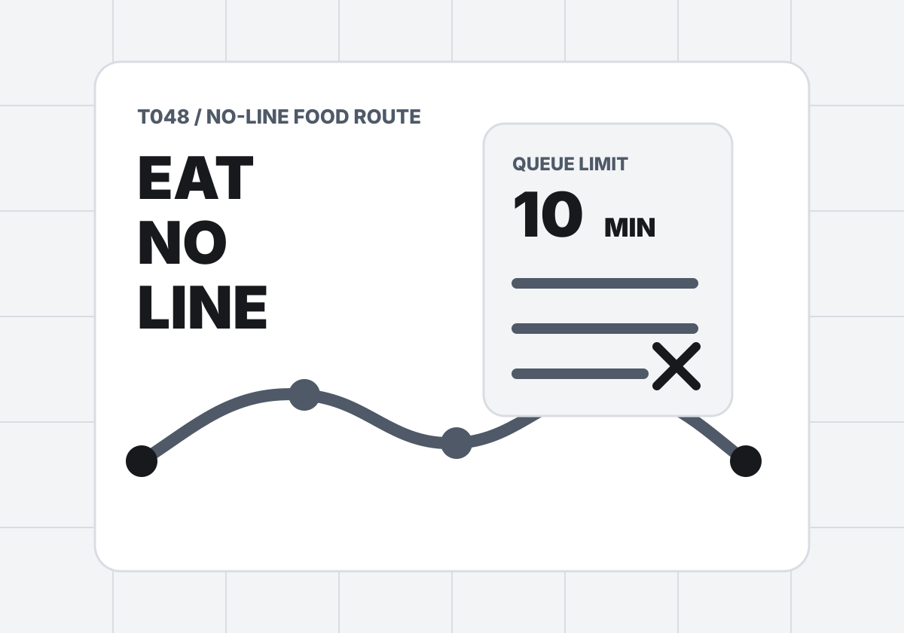

T048 / No-line food route
不要讓排隊，吃掉你的一天。
想吃好，不一定要站在名店門口失去靈魂。把想吃的味道、排隊上限、預算和候選店家丟進來，工具會排出錯峰時段、替代吃法與 ChillOut 可延伸路線。
Appetite setup
今天怎麼吃，先講清楚
Food candidates
候選店家
排隊、價格、距離與滿足度都會影響路線，不只是誰最有名。
Result
先放入候選店家，再生成一天不排隊的吃喝節奏。
結果會包含錯峰時間表、替代規則、預算與排隊指標、社群分享文和 ChillOut prompt。